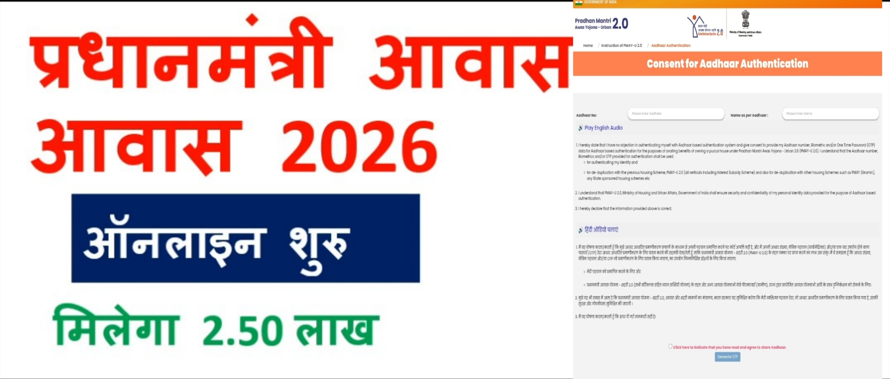

Pm Awas Yojana Online Apply 2026
Pm Awas Yojana Online Apply 2026-पीएम आवास योजना 2026 के लिए ऐसे आवेदन करे?
Pm Awas Yojana Online Apply 2026: नमस्कार दोस्तों, जैसा कि आप सभी जानते है कि भारत सरकार द्वारा देश के सभी गरीब नागरिकों को खुद का पक्का मकान बनवाने के लिए प्रधानमंत्री आवास योजना को चलाया जा रहा है इस योजना के माध्यम से सरकार लाभार्थियों को 2 लाख 50 हजार रुपए की आर्थिक सहायता राशि प्रदान कर रही है यदि भी इस योजना का लाभ लेना चाहते है, तो हम आपको बता दे कि अब आप घर बैठे बहुत आसानी से ऑनलाइन आवेदन कर पाएंगें।
यदि आप Pm Awas Yojana 2026 के लिए ऑनलाइन आवेदन करना चाहते है, तो इस लेख को अंत तक अवश्य पढ़ें क्योंकि इस लेख में हमने आपको आवेदन प्रक्रिया, जरूरी दस्तावेज, योग्यता के बारे में संपूर्ण जानकारी प्रदान की है जिससे कि आप बहुत आसानी से ऑनलाइन आवेदन कर पाएंगें। हम आपको अपने इस आर्टिकल के अंत में उपयोग किए जाने वाली सभी महत्वपूर्ण लिंक का लिंक नीचे प्रदान कर देंगे ताकि आसानी से इस प्रकार का आर्टिकल का लाभ प्राप्त कर सके
| Scheme Name | Pm Awas Yojana Online Apply 2026 Urban 2.0 |
|---|---|
| लेख का प्रकार | Sarkari Yojana |
| किसके द्वारा शुरू की गईe | केंद्र सरकार द्वारा |
| लाभार्थी | देश के गरीब नागरिक , जिनका वार्षिक आय 3 लाख रूपया से कम हो |
| आवेदन प्रक्रिया | ऑनलाइन |
| आधिकारिक वेबसाइट | https://pmaymis.gov.in/ |
| Apply Start | 25-08-2026 |
|---|---|
| Last Date | 15-11-2026 |
- आवेदक भारत का मूल निवासी होना चाहिए।
- आवेदक की न्यूनतम आयु 18 वर्ष होनी चाहिए
- आवेदक के पास राशन कार्ड होना चाहिए।
- आवेदक के पास घर बनवाने के लिए भूमि होनी चाहिए।
- आवेदक के परिवार की वार्षिक आयु 3 लाख रुपए या इससे कम होनी चाहिए।
- आवेदक के परिवार में किसी की भी सदस्य की सरकारी नौकरी नहीं होनी चाहिए।
यदि आप Pm Awas Yojana 2026 के लिए ऑनलाइन आवेदन करना चाहते है, तो आपको नीचे दी हुई सभी योग्यताओं को पूरा करना होगा जो कि कुछ इस प्रकार से हैं –
- विद्यार्थी का आधार कार्ड
- बैंक खाता पासबुक
- बिहार राज्य का मूल निवास प्रमाण पत्र
- दसवीं कक्षा का अंक पत्र व प्रमाण पत्र
- चालू मोबाइल नंबर
- Caste Certificate
- Income Certificate
- Domicile Certificate
| Online Apply | Click Here |
|---|---|
| Login | Click Here |
| Official Website | Click Here |
| Check Status | Click Here |